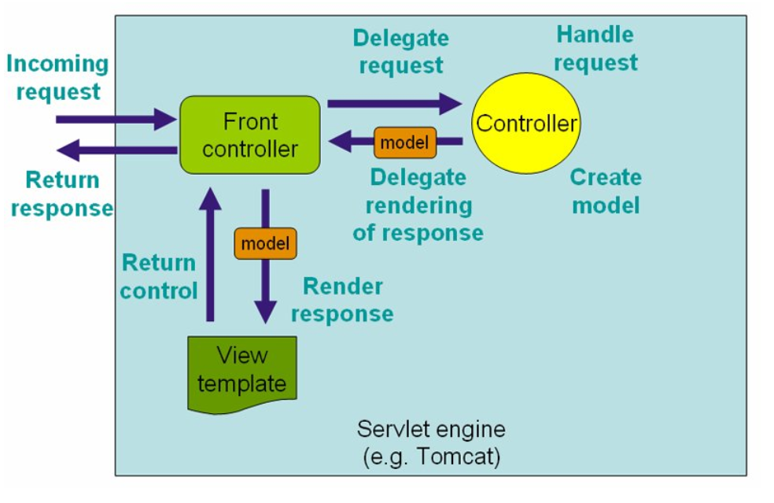
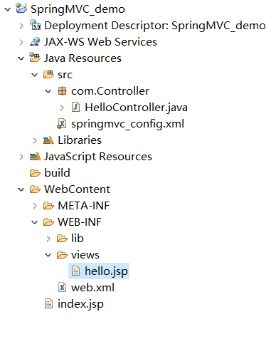
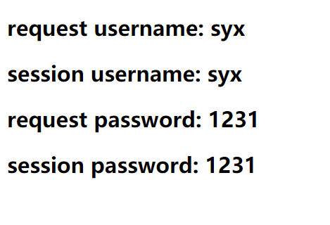
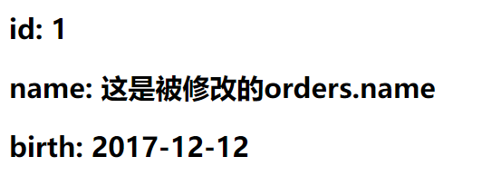
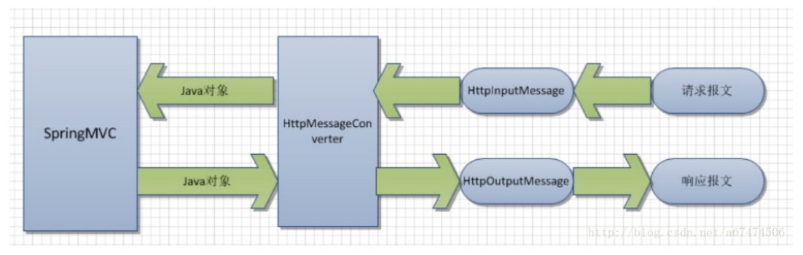
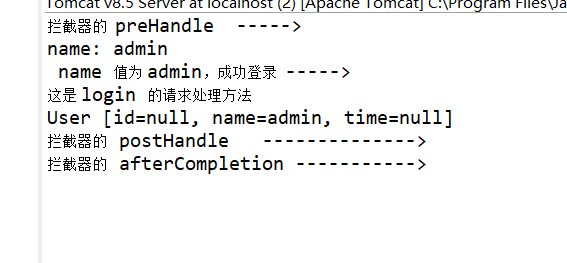

Spring MVC属于SpringFrameWork的后续产品，已经融合在Spring Web Flow里面。Spring 框架提供了构建 Web 应用程序的全功能 MVC 模块。使用 Spring 可插入的 MVC 架构，从而在使用Spring进行WEB开发时，可以选择使用Spring的SpringMVC框架或集成其他MVC开发框架，如Struts1，Struts2等。
Spring的模型-视图-控制器（MVC）框架是围绕一个 DispatcherServlet 来设计的，这个Servlet会把你做出的各个请求按照你事先定好的规则分发给各个处理器，并支持可配置的处理器映射、视图渲染、本地化、时区与主题渲染等，甚至还能支持文件上传。处理器是你的应用中注解了@Controller和@RequestMapping的类和方法，Spring为处理器方法提供了极其多样灵活的配置。
Spring MVC框架，与其他很多web的MVC框架一样：请求驱动；所有设计都围绕着一个中央Servlet来展开，它负责把所有请求分发到控制器；同时提供其他web应用开发所需要的功能。不过Spring的中央处理器，DispatcherServlet，能做的比这更多。它与Spring IoC容器做到了无缝集成，这意味着，Spring提供的任何特性，在Spring MVC中你都可以使用。
下图展示了Spring Web MVC的DispatcherServlet处理请求的工作流。DispatcherServlet应用的其实就是一个“前端控制器”的设计模式（其他很多优秀的web框架也都使用了这个设计模式）。


<?xml version="1.0" encoding="UTF-8"?> <web-app xmlns:xsi="http://www.w3.org/2001/XMLSchema-instance" xmlns="http://java.sun.com/xml/ns/javaee" xsi:schemaLocation="http://java.sun.com/xml/ns/javaee http://java.sun.com/xml/ns/javaee/web-app_3_0.xsd" id="WebApp_ID" version="3.0"> <!-- 配置DispatcherServlet --> <servlet> <servlet-name>springmvc</servlet-name> <servlet-class>org.springframework.web.servlet.DispatcherServlet</servlet-class> <!-- 设置 springmvc 配置文件的位置 --> <init-param> <param-name>contextConfigLocation</param-name> <param-value>classpath:springmvc_config.xml</param-value> </init-param> <load-on-startup>1</load-on-startup> </servlet> <!-- '/' 表示 springmvc 这个servlet 拦截所有请求 --> <servlet-mapping> <servlet-name>springmvc</servlet-name> <url-pattern>/</url-pattern> </servlet-mapping> </web-app>
<?xml version="1.0" encoding="UTF-8"?> <beans xmlns="http://www.springframework.org/schema/beans" xmlns:xsi="http://www.w3.org/2001/XMLSchema-instance" xmlns:tx="http://www.springframework.org/schema/tx" xmlns:context="http://www.springframework.org/schema/context" xmlns:mvc="http://www.springframework.org/schema/mvc" xsi:schemaLocation="http://www.springframework.org/schema/beans http://www.springframework.org/schema/beans/spring-beans-3.2.xsd http://www.springframework.org/schema/tx http://www.springframework.org/schema/tx/spring-tx-3.2.xsd http://www.springframework.org/schema/context http://www.springframework.org/schema/context/spring-context-3.2.xsd http://www.springframework.org/schema/mvc http://www.springframework.org/schema/mvc/spring-mvc-3.2.xsd"> <!-- 自动扫描的包名 ， 若扫描到spring注解的类，这些类被注册为bean --> <context:component-scan base-package="com.Controller"/> <!-- 默认的注解映射的支持，自动注册DefaultAnnotationHandlerMapping和AnnotationMethodHandlerAdapter 该配置的的作用： Spring MVC为@Controller分发请求所必需的。 并且提供了数据绑定支持，读写JSON的支持（默认Jackson）等功能。. --> <mvc:annotation-driven /> <!-- 视图解析器， 把控制器的方法 返回的值通过 prefix + 返回值 + suffix 的形式，得到响应的jsp页面 --> <bean class="org.springframework.web.servlet.view.InternalResourceViewResolver"> <property name="prefix" value="/WEB-INF/views/"/> <property name="suffix" value=".jsp"/> </bean> </beans>
package com.Controller; import org.springframework.stereotype.Controller; import org.springframework.web.bind.annotation.RequestMapping; import org.springframework.web.servlet.ModelAndView; @Controller //指示该类是一个控制器 public class HelloController { /** 1. 使用@RequestMapping注解来映射url请求 * 2. 方法的返回值会通过视图解析器的加工，得到某个jsp页面的位置，然后做具体的转发操作： * prefix+ 返回值 + suffix : /WEB-INF/views/hello.jsp * * 3. ModelAndView对象，该对象包含了返回的视图名，模型的名称，模型对象的名称 * @return */ @RequestMapping(value="/sayhello") public ModelAndView sayhello(ModelAndView model) { System.out.println("say hello "); model.setViewName("hello"); //该值会被视图解析器解析 model.addObject("message", "Hello world"); //添加模型数据，可以在返回的视图中取出模型数据 return model; } }
<!--index.jsp--> <%@ page language="java" contentType="text/html; charset=UTF-8" pageEncoding="UTF-8"%> <!DOCTYPE html PUBLIC "-//W3C//DTD HTML 4.01 Transitional//EN" "http://www.w3.org/TR/html4/loose.dtd"> <html> <head> <meta http-equiv="Content-Type" content="text/html; charset=UTF-8"> <title>Insert title here</title> </head> <body> <a href="sayhello">发送sayhello请求给DispatcherServlet</a> </body> </html> ================================= <!--hello.jsp--> <%@ page language="java" contentType="text/html; charset=UTF-8" pageEncoding="UTF-8"%> <!DOCTYPE html PUBLIC "-//W3C//DTD HTML 4.01 Transitional//EN" "http://www.w3.org/TR/html4/loose.dtd"> <html> <head> <meta http-equiv="Content-Type" content="text/html; charset=UTF-8"> <title>Insert title here</title> </head> <body> <!-- 通过EL表达式，取出模型数据 --> <h2>${requestScope.message }</h2> this is hello.jsp </body> </html>
DispatcherServlet 会根据该请求的名称，执行对应的控制器方法。
控制器方法会处理业务逻辑代码。完成后，会返回字符串，该字符串会被视图解析器，解析成响应的jsp页面的位置。
打开解析的jsp页面。
@Controller注解用于标记一个类，被它标记的类就是一个控制器类。
控制器类负责处理由DispatcherServlet 分发的请求，它把用户请求的数据经过业务处理层处理之后封装成一个Model ，然后再把该Model 返回给对应的View 进行展示。
DispatcherServlet 拦截请求后，springmvc会根据@RequestMapping 提供的映射信息来确定对应的处理方法。
@Controller @RequestMapping(value="first") public class firstController { @RequestMapping(value="login") public String login() { System.out.println("this is login"); return "hello"; } }
<a href="first/login">sss</a>
/*@RequestMapping 有六种属性 * * 1. value(请求的URL) : 指定URL请求的实际地址。 * 2. method(请求的方法) : 指示该方法仅仅处理那些请求post/get 若不写，则可处理任意请求。 * 3. consumes : 表示方法仅处理 application/json 类型的请求。 * 4. produces : 指明返回的内容类型 * 5. params（请求参数） : 指定request中必须包含某些参数值时，才让该方法处理(这里是，该方法仅仅处理请求参数名为myparam，值为myvalue的请求) * 6. headers（请求头） : 指定request中必须包含某些指定的header值，才能让该方法处理请求。(这里是仅仅处理 header中包含了指定Referer请求头，对应值为http://www.abc.org/的请求 ) * */ @RequestMapping(value="/sayhello", method=RequestMethod.GET,consumes="application/json",produces="application/json") public ModelAndView test(ModelAndView model) { return model; } @RequestMapping(value="/sayhello2",params="myparam=myvalue",headers="Referer=http://www.abc.org/") public ModelAndView test1(ModelAndView model) { return model; }
此注解可以很方便的获取请求URL中的动态参数
<a href="test_PathVariable/1">测试@PathVariable注解</a>
/* * 通过@PathVariable("id") 可以把URL请求中的占位符参数绑定 到方法的形参中 * * index.jsp 的URL请求： test_PathVariable/1 */ @RequestMapping(value = "/test_PathVariable/{id}") public String test3(@PathVariable(value = "id") Integer id) { System.out.println("id "+id); //此处的id=1 return "hello"; }
@RequestParam注解会把Http请求的参数信息绑定到响应的方法的形参中。
<a href="RequestParam?username=xiaoming&age=12">测试@RequestParam注解</a>
/** @RequestParam 会把请求的url中的参数信息，绑定到处理方法的形参上。 * 注意： 若url的参数信息没有 @RequestParam 标识的值，程序会报异常。 * * required=false :表示该属性不是必须的，即使url的参数信息没有username，程序也不会报异常。 * defaultValue="aa" : 表示该请求参数的默认值。 * * @param model * @param username * @param age * @return */ @RequestMapping(value="/RequestParam") public ModelAndView testRequestParam(ModelAndView model,@RequestParam(value="username",required=false,defaultValue="aa") String username,@RequestParam(value="age") Integer age) { System.out.println("username :"+username+" age: "+age); model.setViewName("hello"); //该值会被视图解析器解析 return model; }
可以把URL请求header部分的值绑定到方法的参数上。
<a href="RequestHeader">测试@RequestHeader注解</a>
/**@RequestHeader注解： * 绑定请求信息的请求头部分，到方法的参数上。 这里会把请求头的 Accept-Language 的值 赋到al参数上。 * @param model * @param al * @return */ @RequestMapping(value="/RequestHeader") public ModelAndView testRequestHeader(ModelAndView model,@RequestHeader(value="Accept-Language") String al) { System.out.println("Accept-Language : "+al); model.setViewName("hello"); return model; }
用于把请求的cookie数据绑定到方法参数上
<a href="CookieValue">测试@CookieValue注解</a>
/** * 用法同@RequestHeader注解相同 这里把cookie中的JSESSIONID值 赋值给 参数 */ @RequestMapping(value="/CookieValue") public ModelAndView testCookieValue(ModelAndView model,@CookieValue(value="JSESSIONID") String cookievalue) { System.out.println("CookieValue : "+cookievalue); model.setViewName("hello"); //跳转到hello.jsp页面 return model; }
该注解可以指定Model中的某些属性加入到HttpSession对象中。@SessionAttributes注解只能声明在类上，不能声明在方法上
index.jsp:
<form action="SessionAttributes" method="post"> username:<input type="text" name="username"/> password:<input type="text" name="password"/> <input type="submit" value="submit"/> </form>
HelloController.java:
@SessionAttributes(value= {"username","password"}) //把model中的属性名为 username , password 的属性放入HttpSession对象中。 @Controller //指示该类是一个控制器 public class HelloController { @RequestMapping(value="/SessionAttributes") public ModelAndView testSessionAttributes(ModelAndView model,HttpServletRequest request) { System.out.println("username :"+request.getParameter("username")+" password:"+request.getParameter("password")); //获取表单传过来的username model.addObject("username", request.getParameter("username")); //添加模型数据到ModelAndView中 model.addObject("password", request.getParameter("password")); model.setViewName("hello"); //设置响应的视图名称 return model; } }
hello.jsp:
<h2> request username: ${requestScope.username }</h2> <h2> session username: ${sessionScope.username }</h2> <h2> request password: ${requestScope.password }</h2> <h2> session password: ${sessionScope.password }</h2>

index.jsp:
<form action="ModelAttribute_1" method="post"> username:<input type="text" name="username"/> <input type="submit" value="submit"/> </form>
/* * 有@ModelAttribute标记的方法，会在所有的请求处理方法之前被调用一次。 * * 1. 在这次例子中，ModelAttribute_method方法会优先testModelAttribute方法调用。 * 2. 它会把index.jsp 页面的请求参数username 赋值给方法的形参的un. * 3. 并在 model中 设置一个 属性名为username ，其属性值为 方法的返回值 un * */ @ModelAttribute(value="username") //这里的 value="username" 表示在model设置一个属性。属性的名称为username，而属性的值就是该方法的返回值 public String ModelAttribute_method(@RequestParam(value="username") String un) { System.out.println("un :"+un); if(un!=null) { un=un+" by ModelAttribute_method"; //这里对传过来的username请求参数进行加工 } return un; } @RequestMapping(value="/ModelAttribute_2") public String testModelAttribute() { return "hello"; }
hello.jsp:
<!-- 通过EL表达式，取出model中的数据 --> <h2> request username: ${requestScope.username }</h2>
index.jsp:
<form action="ModelAttribute_2" method="post"> username:<input type="text" name="username"/> password:<input type="text" name="password"/> <input type="submit" value="submit"/> </form>
/* * 有@ModelAttribute标记的方法，会在所有的请求处理方法之前被调用一次。 * * 在这次例子中，ModelAttribute_method方法会优先testModelAttribute方法调用。 * */ @ModelAttribute public void ModelAttribute_method(Model model,@RequestParam(value="username") String un, @RequestParam(value="password") String pd) { model.addAttribute("username", un); //在model中添加一个属性。 属性名为username ，其属性值un model.addAttribute("password",pd); } @RequestMapping(value="/ModelAttribute_2") public String testModelAttribute() { return "hello"; }
<!-- 通过EL表达式，取出模型数据 --> <h2> request username: ${requestScope.username }</h2> <h2> request password: ${requestScope.password }</h2>
运行结果：
request username: syx
request password: 1231
<a href="hello?username">@ModelAttribute注解用法三</a>
/** * 注意：发送请求时，要携带请求参数 username * * @return */ @ModelAttribute(value="username") //在model中设置一个属性。名为 username ， 值为方法的返回值 "xiaoming" @RequestMapping(value="/hello") //这里的 /hello 是视图名称， 就是@RequestMapping 的value值 public String testModelAttribute() { return "xiaoming"; //方法的返回值不是视图的名称，而是属性值 }
<!-- 通过EL表达式，取出model中的数据 --> <h2> request username: ${requestScope.username }</h2>
<form action="ModelAttribute_4" method="post"> id:<input type="text" name="id"/> name:<input type="text" name="name"/> birth:<input type="date" name="birth"/> <input type="submit" value="submit"/> </form>
/* * 在model设置一个属性，属性名为 orders ，值为方法返回值ord ，就是表单传过来的值 * */ @ModelAttribute(value = "orders") public Orders ModelAttribute_method(Orders ord_value) { return ord_value; } /* * @ModelAttribute(value="orders") Orders ord * * 表示参数ord 的值就是 model中 属性为orders的值 ord_value * */ @RequestMapping(value = "/ModelAttribute_4") public String testModelAttribute(@ModelAttribute(value="orders") Orders ord) { ord.setName("这是被修改的orders.name"); //把参数的name属性值，修改 return "hello"; //视图名称 }
<h2> id: ${orders.id }</h2> <h2> name: ${orders.name }</h2> <h2> birth: ${orders.birth }</h2>

这个接口，它负责将请求信息转换为一个对象或bean（类型为 T ）,并将bean或对象绑定到请求处理方法的参数中，或者绑定到请求处理方法的返回值（响应信息中）。
DispatcherServlet 装配了默认的RequestMappingHandlerAdapter类 作为HttpMessageCoverter接口的实现类。
RequestMappingHandlerAdapter
该类作用是把请求信息转化为对象，或者把对象转化为响应信息。
当使用 <mvc:annotation-driven />标签配置springmvc时，默认配置了RequestMappingHandlerAdapter

该注解用于读取Request请求的body部分数据,使用系统默认配置的HttpMessageConverter接口的实现类，进行解析成对象或者bean,并绑定到controller中方法的参数上。
注意：springmvc 默认使用 Jackson来转换 json格式的数据，所以在使用前，要下载 jackson的jar包
jackson的jar包：
jackson-annotations-2.9.0.jar
jackson-core-2.9.0.jar
jackson-databind-2.9.0.jar
demo:
注意，这里使用js文件，需要在web.xml中设置对js资源文件不要拦截
index.jsp:
<script src="jq/jquery.js"></script> <!-- 注意，这里使用js文件，需要在web.xml中对js资源文件不要拦截 --> <title>Insert title here</title> </head> <script> function select(){ $.ajax({ type:"post", //dataType:"json", //服务器返回的数据格式 contentType:'application/json;charset=UTF-8', //contentType :上传给服务器的数据格式 data:JSON.stringify({"id":"1","name":"xiaoming","birth":"2012-2-2"}), //把发送的数据变成json格式 url:"test_RequestBody", //${pageContext.request.contextPath} 表示当前项目的根路径 success:function(result){ //当请求处理方法添加了@ResponseBody注解后， alert("success "+result); // result就是该方法的返回值。 }, error:function(){ alert("shibai "); } }); } </script> <body> <button type="button" onclick="select()">按钮1</button> </body>
web.xml:
<!-- 放行页面的js,html,jpg,css等静态资源 --> <servlet-mapping> <servlet-name>default</servlet-name> <url-pattern>*.css</url-pattern> </servlet-mapping> <servlet-mapping> <servlet-name>default</servlet-name> <url-pattern>*.js</url-pattern> </servlet-mapping> <servlet-mapping> <servlet-name>default</servlet-name> <url-pattern>*.jpg</url-pattern> </servlet-mapping> <servlet-mapping> <servlet-name>default</servlet-name> <url-pattern>*.html</url-pattern> </servlet-mapping>
firstController.java:
@Controller public class firstController { /** * 1. @RequestBody 用于处理 由前台页面提交的json或xml格式的数据 * （或用于读取Request请求的body部分数据），并绑定到请求处理方法的参数上。 * * 2. @ResponseBody 把请求处理方法的返回值， * 变成响应数据（写进Response对象的body数据区）而不是页面的名称。 * * 3. 当该方法返回String类型时，若没有添加@ResponseBody注解， * 则该String类型的返回值会被视图解析器解析。变成某个视图页面 * * 4. 若添加@ResponseBody注解，则String类型的返回值，会直接返回给ajax的success回调函数 * * @param ord * @return */ @ResponseBody @RequestMapping(value="test_RequestBody") public String test_RequestBody(@RequestBody Orders ord) { System.out.println("ord : "+ord); return "hello"; } }
由于springmvc的HttpMessageCoverter默认使用 jackson 处理json数据，但有些时候可以使用其他开源jar包来处理json数据，例如：fastjson。
在springmvc_config.xml 文件中进行如下配置：
让springmvc使用fastjson作为http消息转换器的实现类。
<!-- 设置配置方案 --> <mvc:annotation-driven> <!-- 不使用默认的消息转换器 --> <mvc:message-converters register-defaults="false"> <!-- 配置Spring的转换器 --> <bean class="org.springframework.http.converter.StringHttpMessageConverter"/> <bean class="org.springframework.http.converter.xml.XmlAwareFormHttpMessageConverter"/> <bean class="org.springframework.http.converter.ByteArrayHttpMessageConverter"/> <bean class="org.springframework.http.converter.BufferedImageHttpMessageConverter"/> <!-- 配置fastjson中实现HttpMessageConverter接口的转换器 , FastJsonHttpMessageConverter是实现HttpMessageConverter接口的实现类 --> <bean id="fastJsonHttpMessageConverter" class="com.alibaba.fastjson.support.spring.FastJsonHttpMessageConverter"> <!-- 加入支持的媒体类型，返回contentType --> <property name="supportedMediaTypes"> <list> <!-- 注意：这里的顺序不能反 --> <value>text/html;charset=UTF-8</value> <value>application/json;charset=UTF-8</value> </list> </property> </bean> </mvc:message-converters> </mvc:annotation-driven>
<script> function select(){ $.ajax({ type:"post", dataType:"json", //服务器返回的数据格式 contentType:'application/json;charset=UTF-8', //contentType :上传给服务器的数据格式 data:JSON.stringify({"id":"1","name":"xiaoming","birth":"2012-2-2"}), //把发送的数据变成json格式 url:"test_fastjson_RequestBody", //${pageContext.request.contextPath} 表示当前项目的根路径 success:function(result){ alert("success : "+JSON.stringify(result)); //result 是通过@ResponseBody注解 把请求处理方法的返回值写入到 response信息中 }, //，被ajax的success的回调函数接受。 error:function(){ //JSON.stringify(result) ： 把对象转换为json字符串 alert("shibai "); } }); } </script> <body> <button type="button" onclick="select()">按钮1</button> </body>
@Controller public class SecondController { /** @ResponseBody 注解： * 用于把Controller的方法返回值，通过合适的http消息转换器（HttpMessageCoverter）, * 转换为指定的格式，并写入到response响应的body数据区中。 * 通常当返回的数据不是html页面，而是其他格式（json.xml）的数据时，使用它。 * * @param ord * @return */ @ResponseBody @RequestMapping("test_fastjson_RequestBody") public Orders test_fastjson_RequestBody(@RequestBody Orders ord) { System.out.println("orders :"+ord); return ord; } }
SpringMVC会按请求参数名与bean对象的属性名进行自动匹配,相当与自动填充该bean对象。
package com.entity; import java.util.Date; public class Orders { private Integer id; private String name; private String birth; public Orders() {} //省略get/set/toString方法 }
<form action="POJO" method="post"> id:<input type="text" name="id"/> name:<input type="text" name="name"/> birth:<input type="Date" name="birth"/> <input type="submit" value="submit"/> </form>
/** * SpringMVC会把请求参数名与bean对象的属性名进行自动匹配,若都匹配的上，会自动填充该bean对象。 * @param model * @param ord * @return */ @RequestMapping(value="/POJO") public ModelAndView testPOJO(ModelAndView model,Orders ord) { System.out.println("Orders : "+ord); model.setViewName("hello"); //跳转到hello.jsp页面 return model; }
每个请求方法可以有多个不同类型的参数
<a href="ServletAPI">测试请求处理方法可以支持多种数据类型的参数</a>
/** * 请求处理方法可以支持多种数据类型的参数： * HttpServletRequest * HttpServletResponse * HttpSession * Reader * Writer * Map * Model * ModelAndView * ..... * .... */ @RequestMapping(value="/ServletAPI") public ModelAndView testServletAPI(ModelAndView model,HttpServletRequest request,HttpServletResponse response) { System.out.println("HttpServletRequest : "+request+" HttpServletResponse:"+response); model.setViewName("hello"); return model; }
在springmvc框架中，Controller控制器执行业务逻辑，用于产生模型数据(Model),而视图（View）用于渲染模型数据。
index.jsp:
<form action="test_Model" method="post"> id:<input type="text" name="id"/> name:<input type="text" name="name"/> birth:<input type="date" name="birth"/> <input type="submit" value="submit"/> </form>
HelloController.java:
这里有两种写法：①：Model或者ModelMap ②：ModelAndView ①：-------------------------- @ModelAttribute //该注解修饰的方法会先于请求处理方法调用。 public void before(Model m,Orders ord) { System.out.println("before "+ord); m.addAttribute("orde",ord); //把从表单传来的值，放到model中 ，属性名为"orde" ,值为ord } @RequestMapping(value="test_Model") public String test_Model(Model m) { Orders orders = (Orders) m.asMap().get("orde"); //取出model中的名为orde属性 System.out.println("test_Model "+orders); return "hello"; } ②：-------------------------- @ModelAttribute //该注解修饰的方法会先于请求处理方法调用。 public void before(ModelAndView mv,Orders ord) { System.out.println("before "+ord); mv.addObject("orde", ord); //把从表单传来的值，放到ModelAndView中 ，属性名为"orde" ,值为ord } @RequestMapping(value="test_Model") public ModelAndView test_Model(ModelAndView mv) { Orders orders = (Orders) mv.getModel().get("orde"); //取出ModelAndView中model中的名为orde属性 System.out.println("test_Model "+orders); mv.setViewName("hello"); //设置响应的视图名称 return mv; }
hello.jsp:
<!--orde 是 model/ModelAndView 中的属性名--> <h2> id: ${orde.id }</h2> <h2> name: ${orde.name }</h2> <h2> birth: ${orde.birth }</h2>
JSP页面的表单控件的转换的数据类型为String
package com.entity; import java.util.Date; public class User { private Integer id; private String name; private Date time; public User() {} //省略get/set/toString方法 }
index.jsp:
... <form action="login" method="post"> id <input type="text" name="id"/> name：<input type="text" name="name"/> time： <input type="Date" name="time"/> <!--这里的type="Date"，但传给服务器的信息还是String类型--> <input type="submit" value="submit"/> </form> ...
@Controller public class SecondController { @RequestMapping(value="/login") public String login(User user) { // 由于User的time为Date类型，而表单传来的time为String类型，会报错 System.out.println("User : "+user); return "hello"; } }
@Override
public Date convert(String date) {
SimpleDateFormat simpledateformat=new SimpleDateFormat(datepattern); //把yyyy-MM-dd 这种形式的字符串转换为DATE类型
try {
return simpledateformat.parse(date);
} catch (ParseException e) {
System.out.println("=================日期转换失败");
return null;
}
}
}
<h4>②：使自定义的数据转换器生效,在springmvc_config.xml 添加以下代码：</h4>
```xml
<!-- 装配自定义的conversionService -->
<mvc:annotation-driven conversion-service="conversionService"/>
<bean id="conversionService"
class="org.springframework.context.support.ConversionServiceFactoryBean">
<property name="converters">
<list>
<bean class="com.other.StringDateConverter" />
</list>
</property>
</bean>
Spring提供两个可以用于格式化数字、日期和时间的注解@NumberFormat和@DateTimeFormat，这两个标签可以用于bean的属性或方法参数上。
//省略get/set/toString方法
}
<h4>②：装配格式化转换器</h4>
```xml
<mvc:annotation-driven/>
例子：上传图片到D盘中，下载D盘的图片。
文件也可以成为某个bean的属性，例如：用户头像image文件
①：导入 commons-fileupload-1.3.3.jar , commons-io-2.6.jar 到类路径中
②：编写文件上传表单与处理方法
index.jsp:
<form action="upload" enctype="multipart/form-data" method="post"> 文件描述信息： <input type="text" name="file_message"/> 请选择文件： <input type="file" name="file"/> <input type="submit" value="上传"/> </form>
@Controller public class SecondController { @RequestMapping(value = "/upload") public String updateThumb(@RequestParam("file_message") String name, @RequestParam("file") MultipartFile file) throws IllegalStateException, IOException { if (!file.isEmpty()) { //判断文件是否为空 file.transferTo(new File("d:/" //把文件保存在指定路径，文件名为表单传过来的文件信息 + name + file.getOriginalFilename().substring( file.getOriginalFilename().lastIndexOf(".")))); return "hello"; } else { return "hello"; } } }
③：开启spring的文件上传功能(在springmvc_config.xml增加如下代码)：
<bean id="multipartResolver" class="org.springframework.web.multipart.commons.CommonsMultipartResolver"> <property name="defaultEncoding" value="UTF-8"></property> <!-- 请求的编码方式，必须与jsp的编码方式一致 --> <property name="maxUploadSize" value="5242880"></property> <!-- 上传文件大小上限，单位为字节 --> </bean>
文件下载比较简单，直接在页面给出了一个超链接，该链接href的属性等于要下载文件的文件名，就可以实现文件下载了。
SpringMVC提供了一个ResponseEntity类型，使用它可以很方便地定义返回的HttpHeaders和HttpStatus。
<form action="download"> name:<input type="text" name="name"/> <input type="submit" value="下载"/> </form>
@RequestMapping(value="/download") public ResponseEntity<byte[]> download(HttpServletRequest request, @RequestParam("name") String name, Model model)throws Exception { //下载文件路径 String path = request.getServletContext().getRealPath("D:/"); File file = new File("D:/" + File.separator + name +".jpg"); HttpHeaders headers = new HttpHeaders(); //下载显示的文件名，解决中文名称乱码问题 String downloadFielName = new String(name.getBytes("UTF-8"),"iso-8859-1"); //通知浏览器以attachment（下载方式）打开图片 headers.setContentDispositionFormData("attachment", downloadFielName); //application/octet-stream ： 二进制流数据（最常见的文件下载）。 headers.setContentType(MediaType.APPLICATION_OCTET_STREAM); return new ResponseEntity<byte[]>(FileUtils.readFileToByteArray(file), headers, HttpStatus.CREATED); }
它的主要作用是拦截用户的请求并进行相应的处理。比如通过它来进行权限验证，或者是来判断用户是否登陆，或者是像12306 那样子判断当前时间是否是购票时间。
SpringMVC 中的Interceptor 拦截请求是通过HandlerInterceptor接口来实现的。
例子：输入admin，才能登录，否则一直跳转登录页面：
<form action="login" method="post"> name:<input type="text" name="name"/> <input type="submit" value="submit"/> </form>
@RequestMapping(value="/login") public String login(User user,HttpSession session) { System.out.println("这是 login 的请求处理方法"); System.out.println(user); session.setAttribute("user", user); //把user加入到session中 return "hello"; }
①：编写拦截器，实现HandlerInterceptor接口：
public class SpringMVCInterceptor implements HandlerInterceptor{ /** * preHandle方法是进行处理器拦截用的，顾名思义，该方法将在Controller处理之前进行调用. * * SpringMVC中的Interceptor拦截器是链式的，可以同时存在 多个Interceptor， * 然后SpringMVC会根据声明的前后顺序一个接一个的执行，而且所有的Interceptor中的preHandle方法都会在 Controller方法调用之前调用。 * * SpringMVC的这种Interceptor链式结构也是可以进行中断的，这种中断方式是令preHandle的返 * 回值为false，当preHandle的返回值为false的时候整个请求就结束了。 */ @Override public boolean preHandle(HttpServletRequest request, HttpServletResponse response, Object handler) throws Exception { System.out.println("拦截器的 preHandle -----> "); // return true; //当返回之为true ，表示这里的拦截放行， 为false表示已经拦截 String name =request.getParameter("name"); if(!name.equals("admin")) { System.out.println("name: "+name); System.out.println(" name 值 不为 admin，重新回到index.jsp -----> "); request.getRequestDispatcher("index.jsp").forward(request, response); return false; }else { System.out.println("name: "+name); System.out.println(" name 值为 admin，成功登录 -----> "); return true; } } /** * 这个方法只会在当前这个Interceptor的preHandle方法返回值为true的时候才会执行。 * * postHandle是进行处理器拦截用的，它的执行时间是在处理器进行处理之后，也就是在Controller的方法调用之后执行， * 但是它会在DispatcherServlet进行视图的渲染之前执行，也就是说在这个方法中你可以对ModelAndView进行操 * 作。 * * 这个方法的链式结构跟正常访问的方向是相反的，也就是说先声明的Interceptor拦截器该方法反而会后调用， * */ @Override public void postHandle(HttpServletRequest request, HttpServletResponse response, Object handler, ModelAndView modelAndView) throws Exception { System.out.println("拦截器的 postHandle -------------->"); } /** * 该方法也是需要当前对应的Interceptor的preHandle方法的返回值为true时才会执行。该方法将在整个请求完成之后，也就是DispatcherServlet渲染了视图执行， * 这个方法的主要作用是用于清理资源的，当然这个方法也只能在当前这个Interceptor的preHandle方法的返回值为true时才会执行。 */ @Override public void afterCompletion(HttpServletRequest request, HttpServletResponse response, Object handler, Exception ex) throws Exception { System.out.println("拦截器的 afterCompletion ----------->"); } }
②：在springmvc上下文中配置拦截器：
springmvc——config.xml:
<!-- 自定义拦截链配置 --> <mvc:interceptors> <mvc:interceptor> <mvc:mapping path="/*"/> <!-- 拦截所有请求 --> <bean class="com.other.SpringMVCInterceptor"></bean> </mvc:interceptor> </mvc:interceptors>

Resource（资源）： 网络上的任何一种实体都可以称作资源。URL 为每一个资源给定了标识符。
Representational（表现层）： 把资源呈现出来的形式，叫做该资源的表现层。例如：文本可以用txt,html,json格式表现出来。
State Transfer(状态转化) ： Http协议中，GET用来获取资源，POST用来新建资源，Delete用来删除资源，Put 用来更新资源